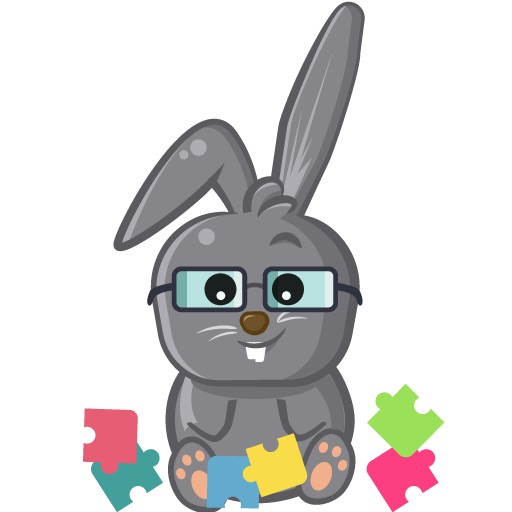
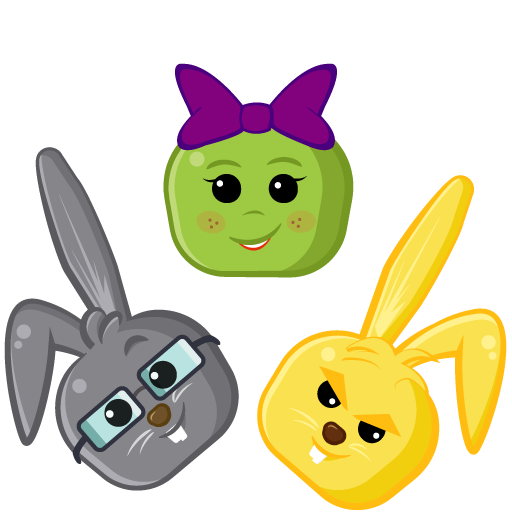

Reto oficial
Define el objetivo: un juego para niños que muestre los costos de mantener una base lunar o marciana.
Leer el reto ↗

UNA AVENTURA PARA DECIDIR
Su equipo vivirá 7 días en una base lunar. Tú decidirás cómo cuidar el aire, la energía y el refugio.
DE DÓNDE SALE CADA IDEA
Estas fuentes nos ayudaron a crear la historia y explicar las decisiones. Los puntos de las barras son reglas educativas inventadas para el juego.
Define el objetivo: un juego para niños que muestre los costos de mantener una base lunar o marciana.
Leer el reto ↗El registro de partículas solares del 10 de septiembre de 2017 inspira la alerta del día 4. No es una medida de radiación de nuestra base ficticia.
Ver el registro ↗Explica por qué la Luna necesita protección frente a la radiación espacial y temperaturas extremas.
Explorar la ciencia ↗Nos ayudó a explicar por qué el aire y el reciclaje son tareas esenciales para la tripulación.
Leer sobre soporte vital ↗La guía educativa de la Agencia Espacial Canadiense inspiró la decisión sobre el huerto y las reservas de comida.
Ver la guía ↗Las ilustraciones de Mayito, Violeta y Rocco vienen de Mi Superpoder es la Programación.
Conocer el proyecto ↗🧩 Hecho con HTML, CSS y JavaScript. Usamos Git para guardar las versiones del proyecto.